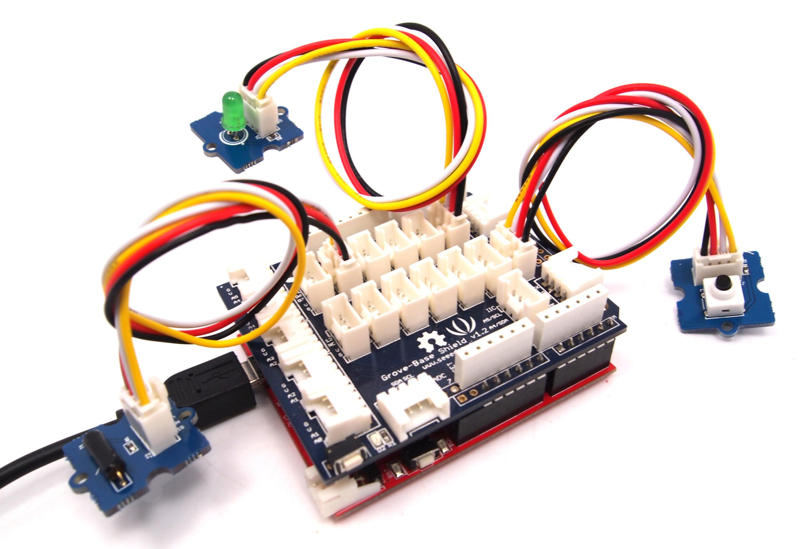
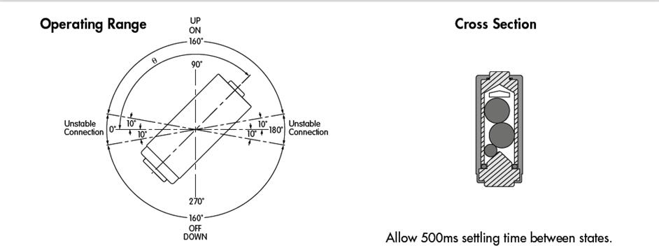
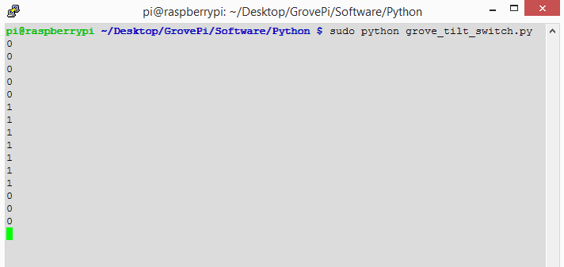

The Grove-Tilt Switch is the equivalent of a button, and is used as a digital input. Inside the tilt switch is a pair of balls that make contact with the pins when the case is upright. Tilt the case over and the balls don't touch, thus not making a connection. It is wired to the SIG line, NC is not used on this Grove.
Model:COM22863P

| Item | Min | Typical | Max | Unit |
|---|---|---|---|---|
| Voltage | 4.75 | 5.0 | 5.25 | V |
| Connecting Angle | 10° ~170° | - | ||
| Disconnect angle | 190° ~350° | - | ||
| Electrical Life | 100,000 | Cycle | ||
The SIG pin of the Grove - Tilt Switch output LOW normally. When the Tilt Switch is upright, a pair of balls inside the tilt switch will contact with the pins and the SIG pin will output HIGH.
The following sketch demonstrates a simple application of using the Tilt Switch and Grove - Button to control the led.

void setup()
{
pinMode(1, OUTPUT);
pinMode(5, INPUT);
pinMode(7, INPUT);
}
void loop()
{
if (digitalRead(5)==HIGH)
{
digitalWrite(1, HIGH);
delay(100);
digitalWrite(1, LOW);
}
if (digitalRead(7)==HIGH)
{
digitalWrite(1, HIGH);
delay(200);
digitalWrite(1, LOW);
}
}
The Operate angle of Grove-Tilt Switch as shown below:

Note: The logo J1 in the Grove is as reference terminal.
1.You should have got a raspberry pi and a grovepi or grovepi+. 2.You should have completed configuring the development enviroment, otherwise follow here.
3.Connection
4.Navigate to the demos' directory:
cd yourpath/GrovePi/Software/Python/
nano grovepi_tilt_switch.py # "Ctrl+x" to exit #
import time
import grovepi
# Connect the Grove Tilt Switch to digital port D3
# SIG,NC,VCC,GND
tilt_switch = 3
grovepi.pinMode(tilt_switch,"INPUT")
while True:
try:
print grovepi.digitalRead(tilt_switch)
time.sleep(.5)
except IOError:
print "Error"
5.Run the demo.
sudo python grove_tilt_switch.py
6.Result Put the sensor upright by one side, the SIG pin will output HIGH.

If you have questions or other better design ideas, you can go to our forum or wish to discuss.
Copyright (c) 2008-2016 Seeed Development Limited (www.seeedstudio.com / www.seeed.cc)